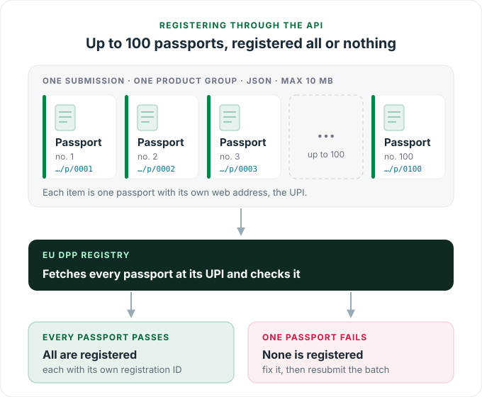
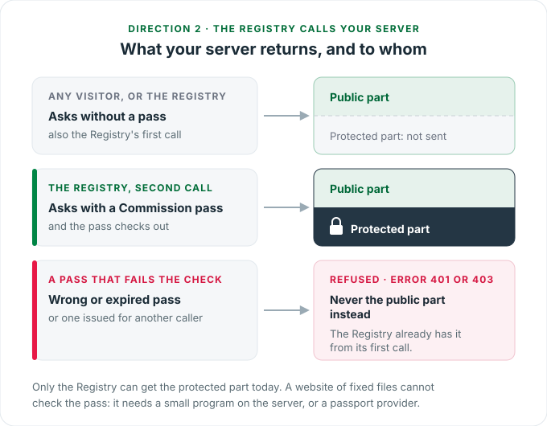

Os passaportes de bateria precisam ser registrados a partir de 18 de fevereiro de 2027. O pacote técnico de 30 de outubro de 2026 para o Registro de DPP da UE traz uma API de registro, autenticação por conta de serviço e no servidor próprio, e um modelo semântico para baterias. O registro pede JSON, o catálogo DCAT foi apenas anunciado e o registro de baterias ainda não está confirmado.
Se você coloca no mercado da UE baterias de veículos elétricos, baterias de meios de transporte leves (LMT) ou baterias industriais acima de 2 kWh, cada bateria precisa de um passaporte de bateria a partir de 18 de fevereiro de 2027, e o Regulamento de Baterias exige que o identificador único dela seja carregado no Registro de DPP da UE. Em 30 de outubro de 2026 a Comissão publicou, na sua página de recursos do DPP, as regras técnicas para fazer esse registro de máquina para máquina: uma API de registro, a forma como os seus sistemas e o seu servidor de passaportes devem se autenticar, e o primeiro modelo de dados semântico, que por enquanto cobre só baterias.
Em resumo
- Comece a construir agora. O seu passaporte é um documento JSON no seu próprio servidor, verificado contra os esquemas publicados pela Comissão e registrado pela interface web ou pela nova API.
- Comece pelo selo. Registrar exige uma organização verificada, e a verificação exige um selo eletrônico qualificado guardado em um dispositivo qualificado.
- Não conte com o funcionamento por enquanto. O Guia do Usuário mais recente ainda diz que um registro de bateria não pode ser concluído com sucesso, e nenhum texto da Comissão diz que isso já mudou.
Em julho encerramos o nosso artigo sobre a entrada no ar do Registro com duas lacunas em aberto: nenhuma API para operadores econômicos e nenhum modelo de dados para baterias. Este pacote fecha a maior parte das duas. As citações abaixo são literais dos textos da Comissão. Todos os documentos técnicos saíram apenas em inglês, por isso mantemos em inglês os nomes de documentos, menus e campos.
O que o pacote contém
Seis documentos são novos. Outros dois, na mesma página, foram atualizados na mesma época.
- API Integration Guide para operadores econômicos, com as especificações OpenAPI (OpenAPI 3.1, versão 1.0.0): como um sistema envia registros.
- Service Account Technical Integration Guide: como os seus sistemas fazem login nessa API.
- Self-Hosted Authentication Guide: como o seu servidor de passaportes reconhece o Registro quando ele pede a parte protegida de um passaporte.
- Semantic Data Guide, com os Semantic Data Artifacts: as listas de códigos, as regras de validação e os esquemas do passaporte base e das baterias.
- Atualizados: o User Guide for Economic Operators v1.03 (última publicação em 16 de setembro de 2026; a página de recursos o chama de "v3"), e o documento Digital Batteries Passport data points by category, v3.2 de 19 de outubro de 2026, desde então substituído pela versão 4 de 19 de novembro de 2026.
Quais padrões de dados o modelo usa
Primeiro, um glossário curto. SKOS é um formato para listas de códigos, SHACL uma linguagem para regras de validação, RDF o modelo de dados de base, e JSON-LD uma forma de dar a chaves JSON comuns um significado compartilhado. A tabela lista os padrões do W3C que aparecem nos arquivos publicados e o papel de cada um.
| Padrão | O que o pacote faz com ele |
|---|---|
| SKOS | Os dados mestres. Cada campo e cada código é um conceito em um de 17 esquemas de conceitos. |
| SHACL | As regras mestras. 18 arquivos de shapes; o guia afirma que os demais esquemas são gerados a partir deles. |
| RDF | O modelo de dados por baixo, publicado em arquivos Turtle. |
| JSON-LD | Cinco contextos que ligam chaves JSON simples a termos dos vocabulários, em camadas: base, grupo de produtos, subgrupo. |
| SPARQL | Só dentro das shapes SHACL, para verificações como a presença de um valor em uma lista de códigos. Não há endpoint de consulta. |
| XSD | Usado para tipos de dados. O guia descreve esquemas XML, mas o arquivo compactado não contém nenhum .xsd. |
| OWL | Apenas metadados de versão (IRI da ontologia, IRI da versão, informação de versão). Sem classes, propriedades ou axiomas. |
| DCAT | Anunciado. O guia diz que o repositório "will publish" (vai publicar) um catálogo DCAT-AP 3.0.1. Ele não está no pacote. |
SKOS, SHACL, RDF e JSON-LD sustentam o modelo; SPARQL, XSD e OWL têm papéis de apoio; DCAT fica para depois. O registro em si usa JSON simples. A seção 2.1 do Semantic Data Guide é explícita: "The registration process will be requesting JSON data format, as it is the only mandatory data format in accordance with EN 18216:2026." (Ou seja, o registro pede JSON, por ser o único formato obrigatório segundo a EN 18216:2026.) Esse JSON é verificado com um JSON Schema (draft 2020-12, uma especificação que não vem do W3C), que a Comissão gera a partir das shapes SHACL. As shapes verificam o mesmo passaporte quando ele é expresso em JSON-LD ou RDF.
Nos arquivos publicados, os esquemas gerados verificam menos do que as shapes de que derivam. Uma shape de bateria exige uma unidade específica para cada campo, volts para uma tensão, por exemplo, enquanto o JSON Schema aceita qualquer endereço de unidade, mesmo um que não esteja na lista de códigos. As shapes também exigem registro no nível do artigo para baterias e bloqueiam os campos que um subgrupo de bateria exclui; os JSON Schemas não fazem nenhuma das duas coisas. Um passaporte pode, portanto, passar no JSON Schema e ainda assim falhar nas shapes. O guia da API não diz qual verificação o Registro aplica ao passaporte que busca, então teste contra os dois até a Comissão esclarecer.
Dois detalhes para quem constrói sistemas de passaporte
Cada passaporte declara contra quais versões foi construído, em um campo chamado contentSpecificationIds: no mínimo uma versão base e uma versão de produto, mais o subgrupo quando houver. E as etiquetas de idioma precisam incluir uma região: en-IE passa, en falha.
O outro detalhe é a licença, e ela é mais simples do que parece. A Comissão publica os 17 vocabulários e as especificações da API sob a licença de código aberto EUPL-1.2, e o Regulamento de Execução determina que o repositório semântico e as suas APIs sejam disponibilizados gratuitamente (artigo 12(7) do Regulamento de Execução (UE) 2026/1778). Você pode construir com esses arquivos e validar os seus passaportes com eles sem pedir autorização a ninguém. As shapes, os esquemas e os contextos ainda não trazem nenhuma declaração de licença, então, se você distribuir cópias dentro do seu próprio produto, mantenha junto a referência à fonte da Comissão.
Registrar pela API
A API é pequena, mas as regras pedem leitura atenta. Ela tem cinco operações: listar os grupos de produtos válidos, enviar um registro, e três chamadas ao Activity Dashboard (o registro de tarefas do Registro) para acompanhar um envio e ler os resultados por item. Não há operação para consultar, alterar ou retirar um registro, e a verificação da sua organização continua sendo feita na interface web, porque a API não tem rota para isso.
Um envio registra até 100 passaportes de uma vez. Cada item é um passaporte com o seu próprio UPI, e todos os itens pertencem ao mesmo grupo de produtos. Um envio tem no máximo 10 MB, e só em JSON. Para baterias, a solicitação precisa indicar um subgrupo. Os exemplos do guia da API e do arquivo OpenAPI usam EV e LMT, enquanto o modelo de dados chama os seus subgrupos de evb, ind e lmt, e nada liga uma nomenclatura à outra. Por isso, peça a lista válida ao Registro em tempo de execução. O registro é tudo ou nada: se um passaporte do lote falhar, nenhum é registrado.

Desde o nosso artigo de julho, o limite do Identificador Único do Produto (UPI), o endereço web do seu passaporte, subiu para 2.000 caracteres. O Registro também faz mais do que guardar um registro: ele busca o seu passaporte ativo no UPI e o valida. Então o seu DPP precisa estar hospedado, e acessível pelo UPI, antes de você registrá-lo.
A autenticação funciona nos dois sentidos
O pacote define dois arranjos de login separados, um para cada sentido. É fácil confundi-los, então aqui eles são nomeados por quem chama quem.
1. O seu sistema chama o Registro: a conta de serviço
Isso só importa se você registrar pela API. Um administrador da sua organização verificada cria uma conta de serviço no Registro (no máximo cinco por organização) e carrega a metade pública de um par de chaves. O seu sistema prova quem é assinando uma mensagem curta com a metade privada, que nunca sai dos seus sistemas, e recebe de volta um passe de acesso válido por 15 minutos. Só são aceitas chaves de curva elíptica, e senhas compartilhadas não são suportadas. Alguns detalhes diferem do que as bibliotecas de software comuns fazem por padrão, então entregue ao seu desenvolvedor o próprio guia da Service Account, e não um resumo.

2. O Registro chama o seu servidor: a parte protegida do passaporte
O seu passaporte tem uma parte pública e uma parte protegida. Quando você registra, o Registro primeiro abre o seu passaporte como qualquer visitante e lê a parte pública. Depois pede de novo, agora com um passe de curta duração assinado pela Comissão, e o seu servidor verifica esse passe antes de entregar a parte protegida. Sem passe, a resposta é a parte pública. Um passe que falha na verificação leva a uma recusa, nunca à parte pública no lugar dela. Um site feito de arquivos fixos não consegue fazer essa verificação; é preciso um pequeno programa no servidor, ou um fornecedor de passaportes que faça isso por você.

Dois níveis hoje, mais depois
Por enquanto há só dois níveis, público e protegido, e o Registro é o único que pode ver a parte protegida. As baterias precisam de mais. Seguindo o artigo 77(2) e o anexo XIII do Regulamento de Baterias, o modelo de dados de baterias classifica cada dado em quatro grupos de acesso: dados públicos; dados para pessoas com interesse legítimo, organismos notificados, autoridades de fiscalização do mercado e a Comissão; dados só para organismos notificados, autoridades de fiscalização do mercado e a Comissão; e dados sobre uma bateria individual para pessoas com interesse legítimo. Ainda não há procedimento publicado que permita a alguém dos três últimos grupos buscar a sua parte no seu servidor.
![Quem pode ver qual grupo de acesso do passaporte de bateria: todos veem o grupo 1 (itens 1 a 45). Pessoas com interesse legítimo, como reparadores, recicladores e operadores de segunda vida, veem os grupos 1, 2 e 4, mas não o grupo 3, os relatórios de ensaio. As autoridades (organismos notificados, fiscalização do mercado, a Comissão) veem os grupos 1, 2 e 3, mas não o grupo 4, os dados de uma bateria específica. Hoje os grupos 2 a 4 não têm forma publicada de chegar ao servidor do operador econômico.](../../../Blogs/dpp-registry-technical-package/battery-access-groups.svg)
Para outros grupos de produtos, as regras virão produto a produto. O Regulamento de Concepção Ecológica (ESPR) deixa para o ato delegado de cada produto quem pode ler ou atualizar quais dados (artigo 9(2) do Regulamento (UE) 2024/1781), e o artigo 11 permite que a Comissão defina procedimentos para as credenciais digitais de quem tem direitos de acesso. O guia Self-Hosted acrescenta apenas que a identificação dos operadores pelo seu identificador único de operador virá em uma versão futura. Nada do que foi publicado diz ainda como outros interessados vão chegar à parte protegida.
Como isso se relaciona com as normas europeias de DPP
Os dois guias citam apenas padrões de internet do IETF. Nenhum deles menciona a EN 18239 ou a EN 18246, as normas do CEN/CENELEC sobre direitos de acesso e sobre autenticação de dados que descrevemos no nosso guia das oito Normas de Sistema do DPP, e o Regulamento de Execução também não se refere a elas. Elas atuam em níveis diferentes. Os guias estabelecem a confiança entre o Registro e o servidor de um operador econômico. A EN 18239 trata de quem mais pode ler ou alterar dados controlados, de autoridades a reparadores, e a EN 18246 da assinatura de dados, para que tanto os dados quanto quem os emite possam ser verificados. Onde se encontram, os guias concordam com os rascunhos que lemos: dados públicos não exigem login, e dados controlados só são liberados depois de autenticação e autorização. Os rascunhos pedem autenticação com nível de garantia elevado. No Registro, essa verificação forte de identidade acontece um passo antes, quando a sua organização é verificada, por exemplo com um selo ou uma assinatura qualificados (artigo 4 do Regulamento de Execução (UE) 2026/1778). Nenhuma das duas normas foi publicada ainda no Jornal Oficial; a lista de normas harmonizadas de DPP da Comissão vai mostrar quando isso acontecer.
O que mudou no Guia do Usuário
A versão 1.03 deixa explícito o que a versão 1.0 deixava implícito: o seu selo precisa estar em um dispositivo qualificado, como um cartão inteligente ou token USB do seu prestador qualificado de serviços de confiança, ou vir de um serviço qualificado de assinatura remota, e um certificado guardado como arquivo de software (.p12 ou .pfx) é recusado. Se você ainda não comprou um selo, confira bem qual tipo está comprando.
Baterias: modelo publicado, registro não confirmado
Dois fatos que ainda não se encaixam
O modelo de dados de baterias já foi publicado. Mesmo assim, o Guia do Usuário, atualizado seis semanas antes, ainda diz que o registro bem-sucedido de passaportes de bateria "not currently available" (não está disponível no momento), e nenhum texto da Comissão diz que isso já funciona. Teste um registro antes de contar com ele.
As baterias continuam sendo o único grupo de produtos que o Registro oferece, e só no nível do artigo. Detergentes, produtos de construção, têxteis e os grupos da ESPR não têm modelo semântico publicado.
Algumas perguntas aos formuladores de políticas
Ao ler o modelo de dados de baterias ao lado da orientação da Comissão sobre os pontos de dados das baterias (versão 4 de 19 de novembro de 2026, que, como a v3.2, diz não ser uma posição oficial da Comissão), quatro pontos nos deixaram em dúvida. Talvez estejamos lendo errado, por isso os colocamos como perguntas.
| Ponto de dados | A orientação | O modelo de dados | A nossa pergunta |
|---|---|---|---|
| Matérias-primas críticas | Remete ao anexo X, ponto 1, do Regulamento de Baterias: cobalto, grafite natural, lítio e níquel | Lista as 34 matérias-primas críticas do Regulamento Matérias-Primas Críticas | Qual lista um passaporte de bateria deve usar? |
| Faixa de temperatura dos valores de tensão | "Quando relevante" | Sempre obrigatória | Como um passaporte diz que uma faixa não é relevante? |
| Marcação de coleta seletiva | Sim ou não | Só aceita "sim" | Um "não" é impossível de propósito? |
| Capacidade nominal | O item público 25 é uma repetição e não deve ser preenchido; o item restrito 51 é o mesmo valor do item 11 | Elimina o item 25, mas mantém um campo restrito próprio, obrigatório para baterias EV e LMT | Os operadores devem preenchê-lo separadamente ou repetir o item 11? |
A segunda e a terceira importam para quem está construindo hoje, porque um passaporte que segue a orientação pode falhar nas verificações do modelo de dados. Se você trabalha nesses textos e pode nos dizer a leitura pretendida, vamos gostar de ouvir.
O que os operadores econômicos terão de fazer, no caso das baterias já antes de fevereiro de 2027
Todo grupo de produtos com obrigação de passaporte vai passar pelos mesmos passos quando as suas regras começarem a valer. Para baterias, eles precisam estar prontos antes de 18 de fevereiro de 2027. A nossa ordem de trabalho:
- Faça a verificação com o selo certo. Um selo eletrônico qualificado (QSeal) é o carimbo digital de uma empresa reconhecido por lei; um empresário individual usa em seu lugar uma assinatura eletrônica qualificada (QES). Compre-o de um prestador que conste de uma lista de confiança da UE, guardado em um dispositivo qualificado ou usado por um serviço de assinatura remota, e aplique-o em PAdES, o formato padrão para assinaturas dentro de um PDF. A compra leva tempo, então comece por aqui.
- Hospede o passaporte antes de registrá-lo. O Registro vai buscá-lo, então o UPI precisa resolver por HTTPS para um JSON válido que declare os seus
contentSpecificationIds. - Valide contra JSON Schema e contra SHACL para o seu subgrupo, até a Comissão confirmar quais verificações o Registro aplica no momento do registro. Qualquer validador de JSON Schema 2020-12 e um validador SHACL de código aberto como o pySHACL servem; isso é trabalho para o seu desenvolvedor ou fornecedor de passaportes.
- Construa o endpoint protegido conforme o guia: a parte pública para solicitações anônimas, 401 para qualquer token inválido, sem alternativa, verificação do audience exatamente pela origem, e 403 a menos que o identificador da organização solicitante corresponda à sua política byte a byte.
- Configure a conta de serviço se você for usar a API. Guarde a chave em um módulo de hardware, se puder, e planeje a renovação: duas credenciais ativas ao mesmo tempo, cada uma válida por no máximo dois anos.
Como as baterias são registradas por item, os números crescem rápido. A interface web aceita um passaporte por formulário, ou até 100 por arquivo carregado, tudo ou nada. Com dezenas de milhares de baterias por ano, são centenas de carregamentos do tipo tudo ou nada, então planeje usar a API. A hospedagem é necessária de qualquer forma, porque o Registro busca o seu passaporte quando você o registra, e o mesmo vale para o endpoint protegido de todos os dados de bateria que não são públicos.
Como a Regen Studio ajuda
Ajudamos operadores econômicos a ir da regulamentação a um passaporte que funciona e pode ser registrado: quais requisitos se aplicam ao seu produto e quando, quais dos seus dados já os cobrem, e do que os seus sistemas precisam para hospedar, proteger e registrar um passaporte que o Registro aceite. Se você fabrica baterias e quer saber se a sua estrutura atual passaria nas verificações do Registro, podemos conversar sobre isso ainda este mês.
Também ajudamos fornecedores de serviços de DPP com o roteiro para construir sistemas que atendam às regras do Registro.
Fontes: Comissão Europeia, página de recursos e documentação do DPP (pacote técnico de 30 de outubro de 2026, só em inglês): API Integration Guide for Economic Operators v1.0 e especificações OpenAPI 1.0.0; Service Account Technical Integration Guide v1.0; Self-Hosted Authentication Guide for Economic Operators v1.0; Semantic Data Guide v1.0 e Semantic Data Artifacts (core 1.0.0, batteries 1.0.0); DPP Registry User Guide for Economic Operators v1.03 (16 de setembro de 2026); Guidance Document: Digital Batteries Passport, data points by category v3.2 (19 de outubro de 2026) e versão 4 (19 de novembro de 2026). Regulamento de Execução (UE) 2026/1778 da Comissão; Regulamento (UE) 2023/1542 (baterias). A análise e as recomendações são da própria Regen Studio.